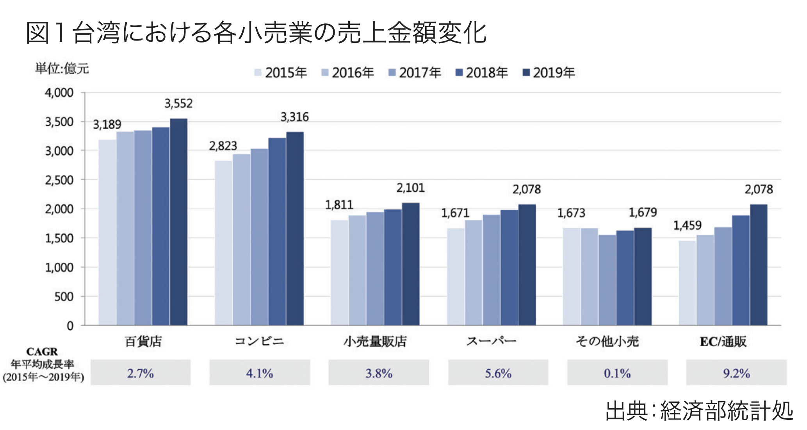

2019 年度の経済統計資料によると、台湾の総合小売業（百貨店、コンビニ、量販店、スーパー等）の市場規模は 1.27 兆台湾ドルに 達し、直近の 5 年では毎年 3.3％成長となっている。実店舗を有する総合小売業と比較すると、EC 業態は総合小売業市場規模の 6 分の 1 にとどまっているものの、ここ 5 年の成長幅は 9.2％と高い伸びを示している。小売市場の競争は激化しており、競合は 同業既存業者以外にも、消費スタイルの変化や EC 業者の増加が実店舗小売業の最大の脅威となっており、近年は顧客流出防止 のため業界各社はこぞって OMO（Online Merges Offline、オンラインとオフラインの融合）型のサービス発展を進めている。
世界の小売業者の間ではOMOが議題になってから数年経過しており、 一例として伝統的小売業者にとって強力なライバル である米アマゾンはオフライン小売に積極的に進出しており、米 ホールフーズを買収し、オンラインとオフラインのサービスに境界 がないオムニチャネル形態のサービスを提供している。実店舗小 売業者の米ウォルマートも積極的に買収やオンラインチャネル 獲得に乗り出し、ドライブスルー形式で商品を受け取るカーブサ イドピックアップ、ピックアップロッカー、ピックアップタワー、当日 配達、インホームデリバリーなどの新たなサービスを打ち出し、 従来小売業がデジタルトランスフォーメーションを進める上で世 界的なモデルケースとなった。
過去において台湾の小売市場は狭い土地と高密度人口によ
り実店舗が密集し利便性が高い特長があるため、ECが急速に
発展するなかでもなお一定規模の実店舗需要があり、実店舗小
売業にとって事業変革圧力は米国や中国などの大国ほど強いも
のではなかった。しかし近年は、EC業者のサービス向上、デリバ
リーサービス等の新たな業者参入によって消費者はEC決済方
式に慣れてきているうえ、EC業者もオンラインと実店舗の統合戦
略を取り始めている。一例として、台湾最大のEC業者である
momo購物網は2019年にグループ傘下の電信業者である台湾
モバイル（台湾大哥大）と協力し、台湾モバイルのショップ店頭で
ネット購入品を受け取れるようになり、momoは800ヶ所の店頭
受取拠点ができることになる。消費者がオンラインで携帯を購入
する場合でも、商品受取時にショップ店頭でセットアップや点検
サービスを受けられる。これは従来長い間優位にあった実店舗
小売店にとって大きな脅威であり、ECの競争激化に対応すべく、
各社共オムニチャネルのビジネスモデル導入を加速させている。
実店舗小売業者がOMOの戦略検討にあたり、既存の大規
模小売チャネルの優位性を利用しつつ、IT運用による最適化や
新たなサービスモデルを提供することが多い。以下では、台湾小
売市場でよく見られるOMOサービスのトレンドと、代表的なモ
デルケースを紹介する。
台湾ファミリーマート（全家便利商店）がいち早くデジタルトラ ンスフォーメーションを導入した成果は優れた例である。2016 年にはシステム構築と統合が完成し、会員アプリのみでポイント を貯めるシステムをリリースした（競合の台湾セブンイレブンは 会員アプリのポイントと従来のポイントシールとを併用するシス テム）。さらに当時非常に斬新だったコーヒーの事前販売「寄 杯」サービスも始めた。ファミリーマートはITシステムの会計と在 庫などの問題を克服し、消費者がアプリ操作でお得な価格で コーヒーをまとめ買いさせ、数回に分けて、また異なる店舗でも 受け取りが可能なので、アプリを使って友人にコーヒーをプレゼ ントすることもできる。こういった消費者のニーズを捉えたサービ スにより、アプリダウンロード数が増え、短期間で消費者の消費 スタイルが変わり、実店舗チャネル行動のオンラインに移行した ことで、会員の消費行動ビッグデータの獲得に成功した。同時に その後のネットショッピングサービス「全家便利購」や決済機能 をもつ「My FamiPay」リリースにおいても、新たなサービス体験 を求める新規会員獲得の加速に有利となった。
世界的な小売業者の発展トレンドに倣い、台湾の大手も続々 とオンラインショップサービスに参入しており、消費者は店舗販 売している商品や店舗にはない商品もオンラインで発注すること が可能で、自宅配送か店舗に取りに行くかも選択できる。物流や システムの最適化に伴い、購入可能品も保存のきく生活用品か ら徐々に生鮮食品や冷凍冷蔵食品などに種類が広がってきて いる。実店舗業者にとっては、ECのゼロからスタートする破壊的 革新に比べ、伝統的な経営スタイルからECとの共存形式の難 易度がより高いといえる。ECサービスを成功させるにはオンライ ンとオフラインのデータ統合、物流倉庫や店舗の空間設計、商 品出荷管理、作業員業務管理などのインフラやサービスフロー において各方面の協力が不可欠であり、計画目標全体、システ ム移行期間の対応方法ともに完璧である必要がある。台湾の量 販店で二番目位に大きいカルフール（家楽福）はオンライン ショッピングサイトを運営して５年近くになるが、生鮮食品の配 送サービスが最大の強みである。2020年のコロナ禍では、オン ラインショッピングでのEC業績が3倍に成長し、オンラインの会 員は200万人を超えている。昨年は7,000～8,000件程度だっ た一日あたりの注文は、今年は10,000件以上に増え、多い日は 20,000件を突破することもあった。自社のECサイト以外にも、カ ルフールは2019年に率先して二大大手オンラインデリバリー サービスのフードパンダ、ウーバーイーツと提携して一時間以内 に店舗からの宅配サービスの提供を開始し、2020年末までに 一日あたり3,000件の好成績を上げており、他のスーパーもこれ に追随している。
台湾最大のスーパー小売業者であるPXマート（全聯福利中
心）のOMO戦略は競合他社とはやや異なっている。PXマートの
OMO市場参入自体は遅かったものの、ECプラットフォームから
の提供より先に、まず決済ツールのPX Payアプリをリリースした。
店舗スタッフによる積極的な会員獲得キャンペーンが功を奏し、
主要顧客の年配女性層はオンライン電子決済で買い物をした
がらないという既成概念を覆して一挙に台湾トップ３の決済
ツールになり、同時に若年層の会員獲得にも成功した。会員数は
既存の200万人から750万人以上にまで増加した。
PXマートは電子決済ライセンスを金融監督管理委員会に申
請済みであり、将来PX PayはPXマート以外でも使用可能にな
る可能性がある。決済ツールを提供する小売業者は数多くある
が、PXマートはスーパーという業態ゆえに利用頻度が高く、コン
ビニと比較すると客単価も高いという特長に加え、店舗数が多く
店員が熱心に利用を勧めるなどの要素も相まって、決済ツール
の普及に成功した。PXマートはさらにECのPXGo！サービスも
開始し、PX Payで多数の会員を獲得した強みを活かしてさらに
OMOの成果を上げる狙いである。
台湾の消費者は日本の影響を強く受けており、台湾の小売業 はサービス形態、ブランドマネジメント、ソフト・ハード構築におい て日本の業者を参考としている。台湾の小売業者は、商品供給、 物流構築、ITサービス提供、経営体制改革など小売業のバ リューチェーンといったあらゆるテーマで日本の業者との交流に 意欲的であり、日本での成功例を理解し、またその成功モデルを 取り入れたいと考えている。